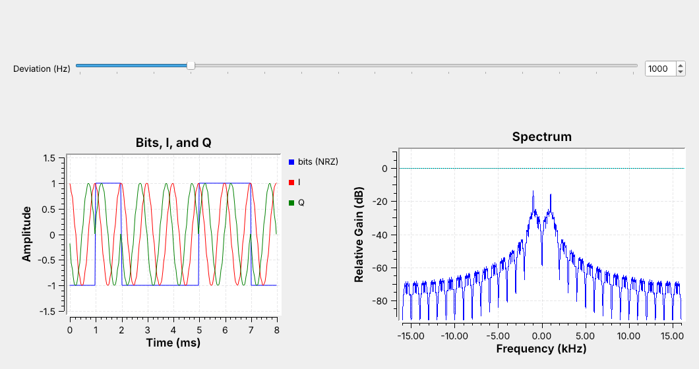
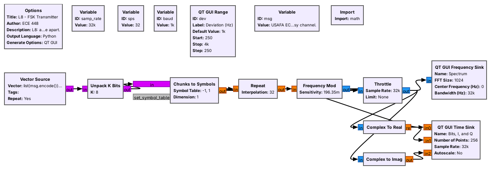
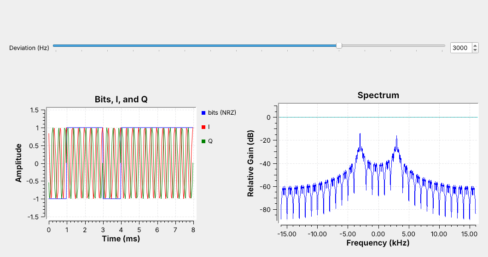
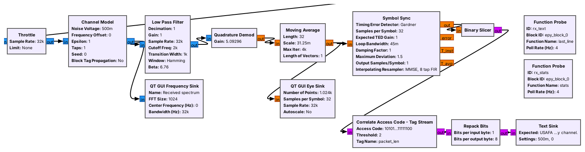
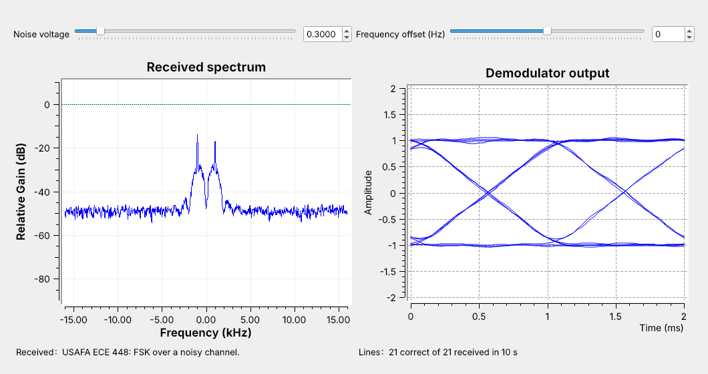
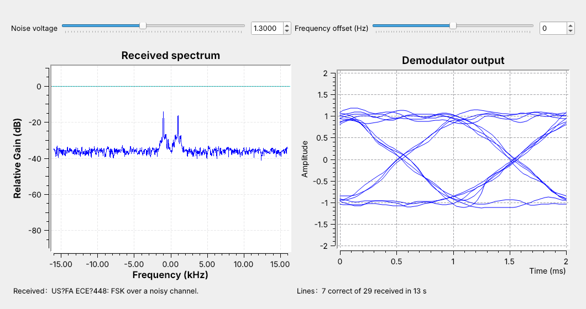
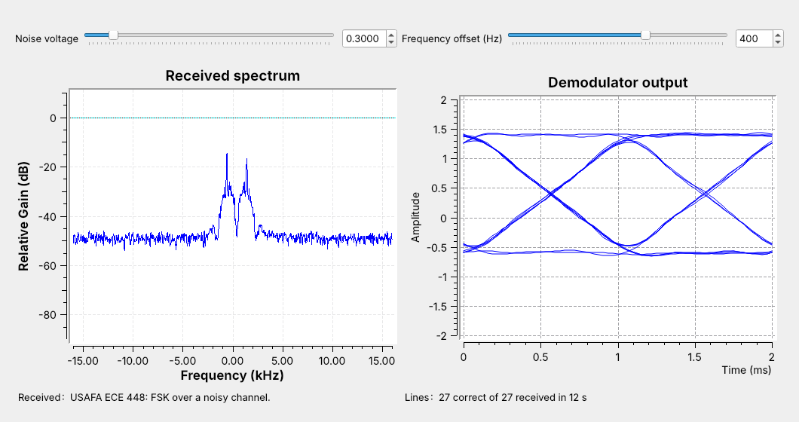
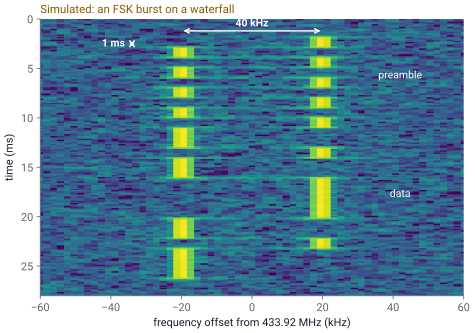

L8 - FSK#
FSK
Frequency-shift keying sends each bit as one of two tones. Today we send text through an FSK transmitter, a noisy channel, and a receiver.
Lesson 8 · Module 4: Digital Modulation · Dr. Neil Rogers
Slides
Learning Objectives
- I can describe FSK modulation and implement an FSK transmitter and receiver in GNU Radio.
A Message on Two Tones

A 1 is a tone at \(+\Delta f\) and a 0 is a tone at \(-\Delta f\).
The spectrum shows both tones: \(\pm 1\) kHz here.
Lessons 6 and 7 put an analog message on a carrier. From here on the message is data. Frequency-shift keying (FSK) sends it by shifting the frequency up by the deviation \(\Delta f\) for each 1 and down by \(\Delta f\) for each 0. The receiver only has to decide, once per bit, which of the two tones it heard.
Run L08-fsk-tx.grc and look at the spectrum first: two peaks, at \(-1\) and \(+1\) kHz, like Lesson 5’s complex tone. Then look at the time plot. The blue trace is the bits. The red trace, \(I\), is the same 1 kHz cosine during every bit, because a cosine cannot tell which way the phase turns. The green trace, \(Q\), can: it flips relative to \(I\) each time the bit changes.
Where FSK Is Used
Pagers, weather balloons, and amateur APRS
Key fobs and garage-door remotes at 315 and 433.92 MHz
Bluetooth and many drone links, as Gaussian FSK (GFSK)
FSK is everywhere because the receiver is simple and the amplitude never changes, so the transmitter’s power amplifier can run at full output. POCSAG pagers, weather-balloon radiosondes, and APRS use it, and so do most key fobs and garage-door remotes at 315 and 433.92 MHz, which Lesson 17 reverse engineers. Bluetooth and many drone links use Gaussian FSK (GFSK), which smooths each frequency step so the signal takes less bandwidth; a GFSK receiver uses the same blocks as today’s.
Part 1: The Transmitter

Bytes become bits, bits become \(\pm 1\), and each symbol repeats
spstimes.Frequency Mod turns each \(\pm 1\) into a frequency of \(\pm\Delta f\).
Walk the chain left to right on the canvas:
Vector Source repeats the bytes of a text message, with a newline at the end.
Unpack K Bits splits each byte into 8 bits, most significant first.
Chunks to Symbols maps 0 to \(-1\) and 1 to \(+1\).
Repeat holds each symbol for
spssamples, the samples per symbol.Frequency Mod turns \(+1\) into a tone at \(+\Delta f\) and \(-1\) into a tone at \(-\Delta f\).
Frequency Mod is the FM transmitter block, and FSK is FM with a square wave of bits as the message; the VCO (complex) block, which the 2025 class used, does the same job. It keeps the phase continuous from bit to bit, which keeps the spectrum compact.
Three Numbers Set the Signal
Symbol rate \(R_s = f_s/\text{sps}\): 32 kHz / 32 = 1000 baud.
Deviation \(\Delta f\): 1 kHz.
Modulation index \(h = 2\Delta f / R_s = 2\).
Open the Frequency Mod and Variable blocks and read off the three numbers. The symbol rate, in baud, is set by the sample rate and the samples per symbol; with one bit per symbol it is also the bit rate:
Frequency Mod takes the deviation as a sensitivity, the phase change per sample for an input of 1:
which is \(2\pi \times 1000 / 32000 = 0.196\) rad per sample here. The modulation index \(h\) compares the tone spacing with the symbol rate; at \(h = 2\) the two peaks are clearly separate.
Bandwidth

The signal takes about \(B \approx 2(\Delta f + R_s)\).
1 kHz deviation at 1000 baud takes about 4 kHz.
The receiver’s filter is set to pass this band.
Drag the deviation slider to 3 kHz and watch the peaks move to \(\pm 3\) kHz and the spectrum widen. A faster symbol rate widens it too. Carson’s rule from FM adds the two:
At 1 kHz and 1000 baud that is 4 kHz, and at 3 kHz it is 8 kHz. We use the number for one thing: setting the receiver’s first filter. A wider deviation makes the tones easier to tell apart, but the wider filter also lets in more noise.
Part 2: The Channel
L08-fsk-link.grc: transmitter, channel, and receiver in one file.The Channel Model adds noise and a frequency offset, each on a slider.
Close the transmitter and open L08-fsk-link.grc. Its top row is the transmitter you just ran. After the Throttle, a Channel Model block stands in for the air: it adds noise of a chosen voltage and shifts the signal by a chosen frequency offset. Run it and drag the noise slider: the tones on the spectrum stay put while the noise floor rises and falls. Set the noise to 0.3 and leave the offset at 0 while we walk through the receiver.
Part 3: The Receiver

Filter to the signal, turn frequency into a number, and decide each bit.
The receiver works in three steps. A Low Pass Filter with a cutoff of \(\Delta f + R_s = 2\) kHz passes the 4 kHz band from \(-2\) to \(+2\) kHz and removes the noise outside it. A Quadrature Demod turns the frequency of each sample into a number. The last three blocks find each bit’s sampling instant and decide whether it is a 0 or a 1.
The Quadrature Demodulator
It measures the phase step from one sample to the next.
A phase step is a frequency: \(\pm\Delta f\) gives \(\pm 1\) with gain \(f_s/(2\pi\Delta f)\).
Quadrature Demod is Lesson 7’s FM demodulator. It measures how far the phase turns from one sample to the next, which is the frequency, and multiplies by its gain. Set the gain to
which is \(32000 / (2\pi \times 1000) = 5.09\) here, and the tone at \(+\Delta f\) comes out as \(+1\) and the tone at \(-\Delta f\) as \(-1\). The gain is the reciprocal of the transmitter’s sensitivity: the demodulator undoes the modulator, and out comes the square wave of bits, with noise on it.
Save It and Look in Audacity
Add a File Sink (float) on the Quadrature Demod output.
Open the file in Audacity as raw 32-bit float: the bits are the square wave.
Do this live. Drag a File Sink onto the canvas, set its type to float and its file to demod.f32, and connect it to the Quadrature Demod output. Run for a few seconds and stop. In Audacity choose File, Import, Raw Data: 32-bit float, little-endian, 1 channel, sample rate 32000. Zoom in until single bits show: each is a flat step near \(+1\) or \(-1\), sps samples long, with the noise riding on it.
Finding the Bits

Moving Average over one symbol, then Symbol Sync samples each bit at its peak.
Binary Slicer: above 0 is a 1, below 0 is a 0.
A Moving Average over sps samples smooths each bit. Symbol Sync picks one sample per bit, at the peak, and keeps adjusting its timing because the two clocks never quite match. The Binary Slicer decides: above 0 is a 1, below 0 is a 0.
Now look at the eye diagram on the right, many two-bit stretches of the moving average overlaid. The traces cross at the bit edges; the gap between \(+1\) and \(-1\) is the eye opening. A wide-open eye means every decision is easy, and at this noise setting every line arrives intact.
Part 4: Packets
The transmitter adds a 64-bit access code and a length header to each line.
The receiver searches for the access code to find where each line starts.
The slicer’s bits do not say where a byte starts, so the transmitter sends each line as a packet. A Protocol Formatter builds a header, a 64-bit access code the receiver knows in advance followed by the line’s length, and a Tagged Stream Mux puts it in front of the line.
At the receiver, Correlate Access Code - Tag Stream watches for the access code, allowing up to 2 wrong bits, reads the length, and passes that many bytes on. Repack Bits packs them back into bytes, and the Text Sink, a small Python block, shows the latest line and counts how many matched since a slider last moved. Lesson 10 uses the same framing for ASCII over PAM.
Turn Up the Noise

Low noise: a wide-open eye, and every line arrives.
More noise: spikes cross zero, and lines start to have errors.
Drag the noise slider up slowly from 0.3 and watch three things: the floor on the spectrum, the eye, and the text. First the floor climbs toward the tones and the eye’s traces thicken. Then now and then a sharp spike, an FM click, crosses zero; one that lands on a sampling instant is a bit error, and lines start to arrive with wrong characters. The figure is at 1.3, where most lines have an error. Keep going and the receiver stops finding the access code at all.
The whole change, from clean text to no text, takes a small turn of the slider. That is why Lesson 2’s link margin matters: a link that only just works fails on the first fade.
FSK Explorer
The explorer repeats the noise experiment with the receiver’s output in view. The left panel is the spectrum, with the Carson bandwidth shaded and the two tones dashed. The right panel is the receiver’s output for 16 bits, with the sent levels in gray and a dot at each decision; a red dot is a wrong bit. Raise the deviation: the tones move apart and the band widens. Set it back to 600 Hz and raise the noise slowly until the first red dot appears. Then try 2400 baud: the band widens, more noise gets through, and red dots appear at a lower noise voltage. The explorer runs its own link, 48 kHz at 1200 baud, so its numbers are not the flowgraph’s.
Frequency Offset

An offset shifts both tones, so the demodulator output shifts by \(f_\text{off}/\Delta f\).
Once the lower level nears zero, the text breaks.
No two radios agree exactly on frequency: their crystals are off by a few parts per million, and at 915 MHz 2 ppm is 1.8 kHz. With the noise at 0.3, drag the offset slider to 400 Hz. Both tones move right, and the whole eye moves up, as in the figure. Both levels are still on the correct side of zero, so the text still arrives.
Keep going. As the lower level nears zero, and the filter starts to cut off the upper tone, lines arrive with errors and then stop. Real receivers either use a deviation much larger than the expected offset, as key fobs do, or measure the offset and remove it before the demodulator. The L8 Lab measures both effects.
FSK on a Real Radio

Tone spacing gives \(2\Delta f\); the shortest dwell gives \(1/R_s\).
To transmit, use a cable through the 30 dB attenuator, and only when the lesson says to; nothing in L8 transmits.
On a waterfall, FSK is two tracks side by side with the signal jumping between them. The figure simulates a 433.92 MHz remote, the kind Lesson 17 decodes. Read two numbers off it: the tracks are 40 kHz apart, so \(\Delta f = 20\) kHz, and the shortest stay on one track, in the preamble, is 1 ms, so the symbol rate is 1000 baud. A live waterfall row often lasts longer than one bit, so measure the dwell on the Quadrature Demod output. Those two numbers set the receiver’s filter, gain, and samples per symbol.
To run this link over the air, replace the Throttle and Channel Model with a PlutoSDR Sink on one side and a source on the other, with a resampler to raise the 32 kHz stream to a rate the radio supports. In class we transmit only into a cable through the 30 dB attenuator, and only when the lesson says to. Nothing in this lesson or its lab transmits.
Key Point
FSK sends each bit as one of two tones. The transmitter is a Frequency Mod block; the receiver filters to \(2(\Delta f + R_s)\), demodulates frequency into \(\pm 1\), samples each bit at its peak, and slices at zero.
Downloads and Sources
L08-fsk-tx.grc: the FSK transmitter alone, with a deviation slider, showing the bits, the transmitted signal, and its spectrum. No hardware needed.
L08-fsk-link.grc: a line of text through an FSK transmitter, a Channel Model with noise and frequency offset sliders, and an FSK receiver that displays the received text. No hardware needed.
Open a .grc file from GRC’s File menu, or run gnuradio-companion L08-fsk-link.grc from the radioconda prompt. The link flowgraph’s Text Sink is an Embedded Python Block; GRC saves its code into the .grc file, so it needs no other download.
This lesson follows:
PySDR, Digital Modulation, the FSK section.
Dr. Rogers’s 2025 slides, AM and FM Receivers, p. 9, FSK agenda: FSK in GNU Radio, parallel-to-serial conversion with byte data, the VCO block, and saving to a file to view in Audacity.
Summary
Idea |
What it is |
Number to remember |
|---|---|---|
FSK |
a 1 at \(+\Delta f\), a 0 at \(-\Delta f\) |
course link: \(\Delta f\) = 1 kHz |
Symbol rate |
\(R_s = f_s/\text{sps}\) |
32 kHz / 32 = 1000 baud |
Modulation index |
\(h = 2\Delta f/R_s\) |
\(h = 2\) |
Frequency Mod |
sensitivity \(2\pi\Delta f/f_s\) |
0.196 rad per sample |
Quadrature Demod |
gain \(f_s/(2\pi\Delta f)\) |
5.09 |
Bandwidth |
\(B \approx 2(\Delta f + R_s)\), sets the filter |
4 kHz |
Access code |
marks the start of each packet |
64 bits, 2 errors allowed |
Practice
Looking Ahead
The L8 Lab builds the transmitter and measures the link’s noise and offset limits.
Lesson 9 sends bits as amplitudes instead of frequencies: PAM.
Today we built an FSK transmitter from a Frequency Mod block, a receiver from a filter, a quadrature demodulator, and a slicer, and a packet format that lets the receiver find each line of text. The L8 Lab is the hands-on version: build the transmitter from an empty canvas, then use the link flowgraph to find the noise level and the frequency offset at which the text stops arriving, and test whether a wider deviation helps.
Lesson 9 changes what carries the bits. Pulse-amplitude modulation (PAM) sends each symbol as a pulse of a chosen height, and Lesson 10 sends ASCII text over it. Its receiver ends the same way as today’s, with symbol timing and a slicer.